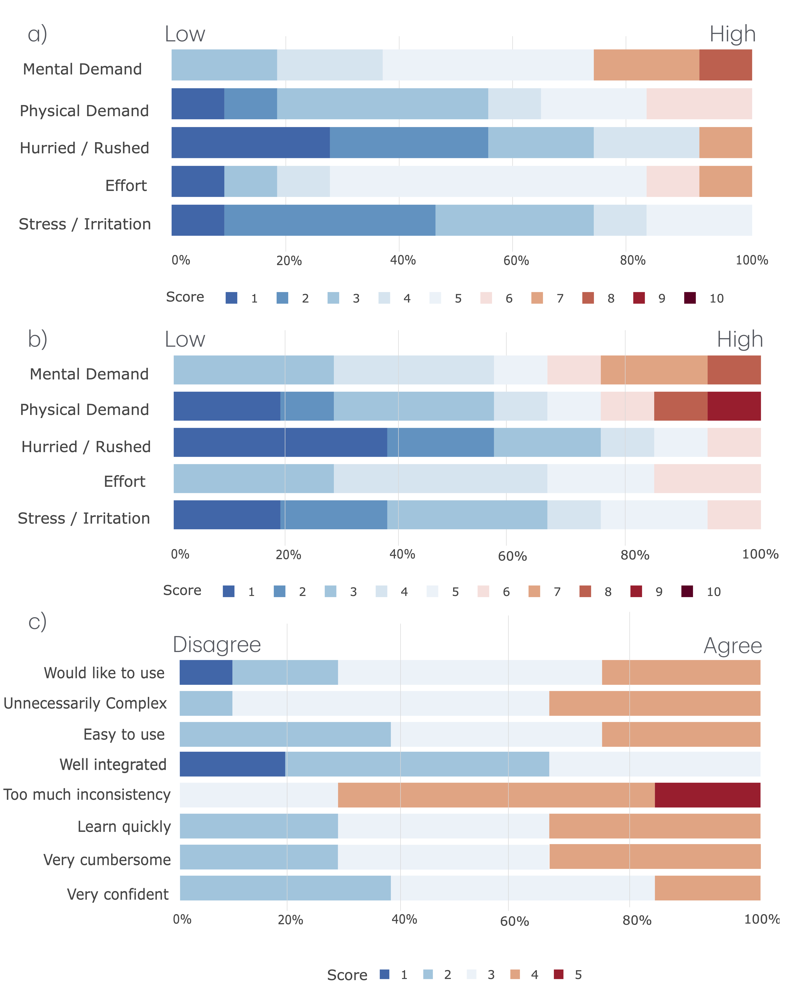

Spatial video is emerging as a compelling new media format because it adds depth cues that make captured moments feel more immersive and engaging. Meanwhile, recent reconstruction techniques are making it increasingly possible to convert casually captured 2D video into viewable 3D content for VR and AR, greatly broadening access to this media. However, generating a 3D spatial video does not guarantee a satisfactory first result; creators also need ways to revise, refine, and creatively manipulate the reconstructed scene. Despite this need, tools for directly editing dynamic 3D spatial video remain underexplored. To address this gap, we first derive a design space for immersive spatial video editing by systematically synthesizing operations from prior 2D video editing and spatial interaction literature, then mapping them into embodied 3D interaction techniques. Guided by this framework, we develop DIVE, a VR research prototype that supports core spatial editing operations such as object segmentation, 6DoF temporal-spatial relocation, generative video inpainting, dynamic viewpoint switching, and the accumulation of 3D motion trails. We evaluate DIVE through a usability study and report key findings, lessons learned, and design implications for future immersive tools for editing dynamic spatial video.
| Category | Action |
|---|---|
| Navigation and Playback | 6DoF Scene Manipulation |
| Temporal Playback | |
| Motion Accumulation | |
| POV Switching | |
| Segmentation | Spawn Context Tablet |
| Volumetric Targeting | |
| Execute Segmentation | |
| Spatial-Temporal Modification | Spatial-Temporal Relocation |
| Generative Inpainting | |
| Scene Hot-Swapping |
The DIVE Actionable Space. This table outlines the practical mapping of our combined taxonomy, detailing the core operations required to execute spatial-temporal video edits.
Our exploratory usability study examined how participants learned, performed, and reflected on immersive spatial video editing with DIVE. Because the study was designed to understand usability and interaction characteristics rather than compare conditions, we organize the results around our three research questions and integrate empirical observations with interpretation. We also connect these findings to prior HCI work on immersive authoring, bimanual interaction, and VR interface design, situating DIVE within a broader trajectory of immersive creative tools.

Distribution of participant responses across (a) workload (NASA-TLX) after finishing the basic operation tasks, (b) repeated workload measurements after completing the whole study, and (c) System Usability Scale (SUS). NASA-TLX and SUS figures display the percentage of responses on a 1–10 scale and a 1–5 scale respectively, with color indicating score levels from low (blue) to high (red).